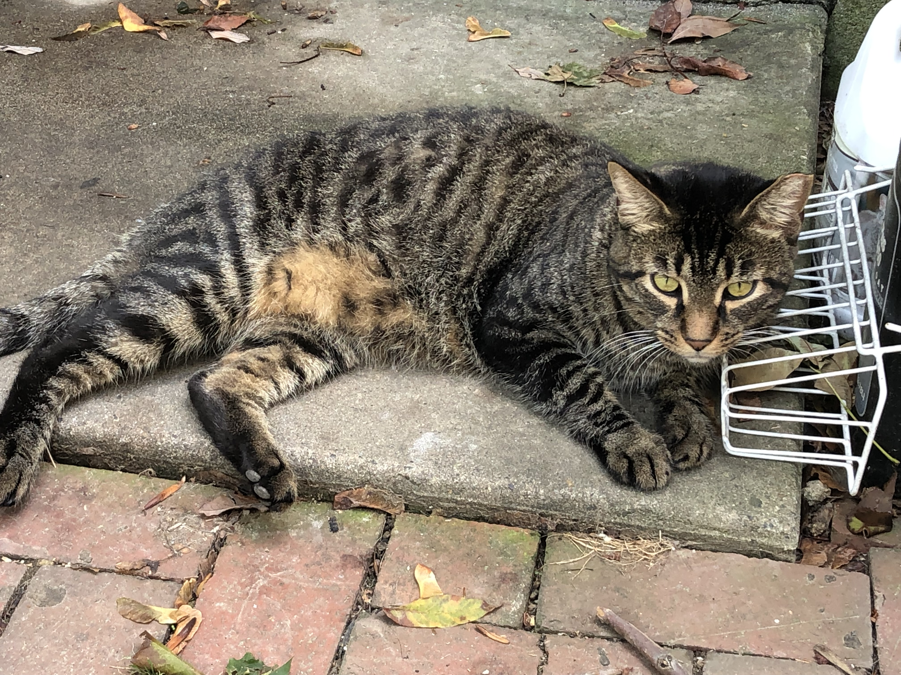
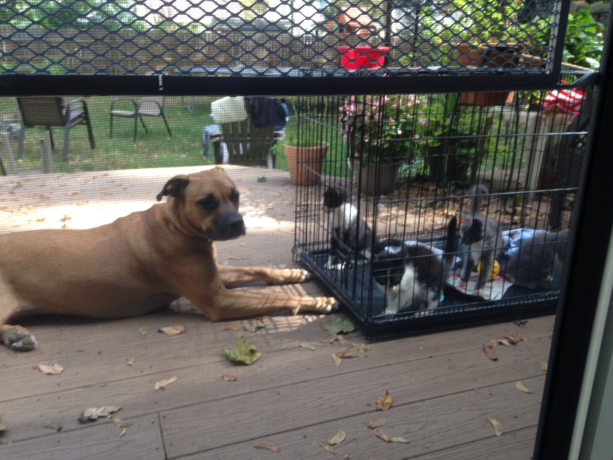
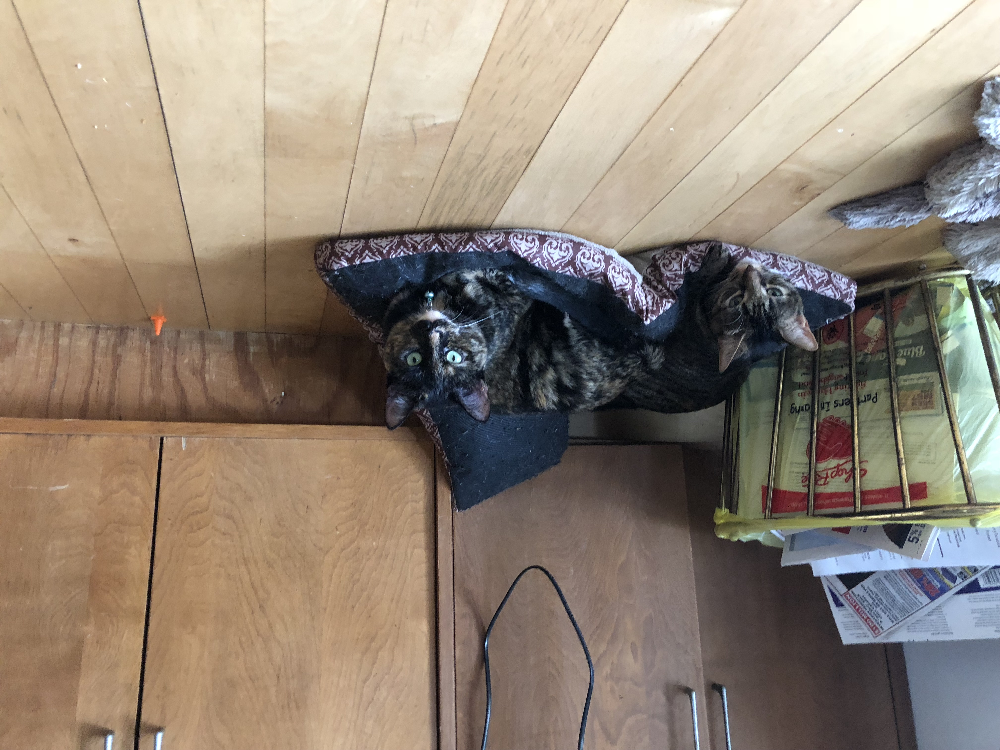

I have been playing video games almost my entire life. I began when I was three years old, playing the original
"Sonic the Hedgehog," and it's respective sequels on my dad's SEGA Genesis, as well as Super Mario, Spyro the Dragon, and
various other games on consoles belonging to friends and family. Since then I've developed a deep love for gaming, especially
since the pandemic hit earlier this year. Some of my favorite games & franchises include Pokemon, Sonic, Halo, Mario, Smash,
CoD, Destiny, Mario Kart, Legend of Zelda, Rocket League and several others.
Rocket League
Rocket League is a strange, yet glorious cross-platform game. For those unfamiliar, it is
essentially
playing soccer with a matchbox car, which makes for unique challenges & gameplay. I have been
playing
this game for about four years now and have made some absolutely insane plays. Showcased above
is one
of my personal favorites, a two-piece combo of both a save on my own goal and scoring on the
enemy.
Destiny
Destiny (and its sequel) is the brain-child of the original developers of both Halo and Call of
Duty, some
of the most popular game franchises in the world; so it goes without saying that Destiny
incorporates the best elements of both,
as well as many unique features such as elemental-based super powers, unique weapons & abilities
based on the players chosen class & subclass, and compelling stories that entrance the players
in an experience unlike anything else. Featured here is a clip of my character getting a tripple
kill, which would have been a quadrakill if I had timed my mag-change just a bit better.
Modern Warfare
The original Modern Warfare & it's two sequels are some of the most revered games amongst gamers of the
modern era. So it goes without saying that, when Activision announced a 2019 release of a Modern
Warfare remake, the fanbase was ecstatic for a game that brought back beloved elements and features,
wrapped up in modern development and a compelling original story. Modern Warfare had a shaky start,
but in the time since its release the developers have made scrupulous efforts to fix any-and-every
glitch, bug and problem within the monumental FPS. Featured here is a clip of myself holding down
my team's base in the playlist "Headquarters."
LEGO
As previously stated, when the pandemic hit I began indulging in LEGO building as a hobby. My interest was
seriously peaked in February, 2020, when the series "LEGO Masters" premiered; watching the contestants create & build
some of the projects that were undertaken on the show inspired me to really step my build-game up. Over the last year
I've built up a rather impressive collection of custom MOC (My Own Creation) & official minifigures, large-scale builds, and a
large collection of Marvel mini and big figures. I've featured some of my favorite & best projects below, and others
can be found on my Instagram or at Andy's Brick Shop in the Oxford Valley Mall.
"I know what it's like to lose,
to feel so desperately that you're right, yet to fail none the less. I ask you, 'to what end?' Dread
it, run from it, destiny arrives all the same...or should I say, I have."
-Thanos "Avengers: Infinity War"
I think it's safe to say that
Gritty has become a pop-culture sensation, both locally and nationally. As a Philly boy, hockey player and
die-hard Philadelpha Flyers fan, I couldn't pass up buying this custom-made Gritty minifigure. It was a bit
pricey upon purchase, but Gritty's actions and reputation in the world continue to build appreciation &
value for this minifigure.
Tensegrity is a unique,
but difficult concept to successfuly incorporate into LEGO builds. It is done by "hanging" a weight of bricks
by the base of the sculpture, with either a large chain or rope piece, and allowing the weight to pull forward just
enough that it creates an opposite pull-force on the small chain or rope piece that connects to the middle of
the sculpture. The result is an interesting effect that looks as if the sculpture is two seperate parts, with
the top looking as if it's floating in mid-air.
"Nature has an order; a power to restore balance. I believe HE is that power."
-Ishiro Serizawa "Godzilla"
These are just a few small pieces of my entire LEGO collection. I am currently involved in a massive, collaborative
project, a LEGO replica of Monster Island, featuring minifigure versions of myself and two friends, Godzilla and several other
LEGO titans/kaiju.
Volunteer Work
I have always had a deep love for animals and wanting to help them in any way I can. From time-to-time, I volunteer at
a local shelter called The Bridge Clinic in Newtown, Pennsylvania. My family and I have both fostered and adopted many kittens &
cats, some of which can be seen below.
Meet Farnsworth. I found him living amongst
a colony of strays I look after in a small patch of woods behind the Giant in Morrisville. Based on his
incredibly friendly approach and the fact that all of the other cats wouldn't allow him near any of the
food I'd put out, it was determined that he was abandoned there and needed to be rescued ASAP. We fostered
from late 2018 until earlier this year when we were able to find him his loving forever home.
Willie, Pete & Jack were one of the
first litters of kittens we fostered. All three were discovered living with their mother in an abandoned truck
behind a friend's house. It took some time, but eventually all three really warmed up to us, & it was difficult
to have to take them to the shelter when it came time for them to go to their forever homes.
Nala was rescued by a former
co-worker from the Bensalem Humane Society, but when he realized his family couldn't give her the attention
she needed I immediately volunteered to take her in. Over the last six years she's proven to be both a loyal
& loving companion, as well as an incredibly needy pain who I wouldn't trade for the world. Here she is
watching over our last litter of fosters, Buttons, Flower, Fluff and Po. Of the four, Buttons, Flower & Fluff
have gone on to be adopted by loving families. Po, on the other hand, decided to stay here & claim our house
as his own. He is now my cat & has cemented his place as Nala's baby brother.
Zombie & Babie were both abandoned,
but in different scenarios. Babie was discovered in the same place as Farnsworth, around the same time; the key
difference between them being Farnsworth's friendliness, as opposed to Babie being incredibly skittish, made it
more difficult to catch her & bring her home for care, but eventually she learned to trust me...sort of. Zombie
was discovered when a local realtor & friend discovered her at a house she was selling. The house was already
sold & the family had left her behind when she went outside one day, while they were packing & didn't come back
until it was too late. Since then she's easily earned her place in our home, winning over everyone and earning
the title "Princess Pussyfoot" from my fiance.
 "I know what it's like to lose,
to feel so desperately that you're right, yet to fail none the less. I ask you, 'to what end?' Dread
it, run from it, destiny arrives all the same...or should I say, I have."
-Thanos "Avengers: Infinity War"
"I know what it's like to lose,
to feel so desperately that you're right, yet to fail none the less. I ask you, 'to what end?' Dread
it, run from it, destiny arrives all the same...or should I say, I have."
-Thanos "Avengers: Infinity War" I think it's safe to say that
Gritty has become a pop-culture sensation, both locally and nationally. As a Philly boy, hockey player and
die-hard Philadelpha Flyers fan, I couldn't pass up buying this custom-made Gritty minifigure. It was a bit
pricey upon purchase, but Gritty's actions and reputation in the world continue to build appreciation &
value for this minifigure.
I think it's safe to say that
Gritty has become a pop-culture sensation, both locally and nationally. As a Philly boy, hockey player and
die-hard Philadelpha Flyers fan, I couldn't pass up buying this custom-made Gritty minifigure. It was a bit
pricey upon purchase, but Gritty's actions and reputation in the world continue to build appreciation &
value for this minifigure.  Tensegrity is a unique,
but difficult concept to successfuly incorporate into LEGO builds. It is done by "hanging" a weight of bricks
by the base of the sculpture, with either a large chain or rope piece, and allowing the weight to pull forward just
enough that it creates an opposite pull-force on the small chain or rope piece that connects to the middle of
the sculpture. The result is an interesting effect that looks as if the sculpture is two seperate parts, with
the top looking as if it's floating in mid-air.
Tensegrity is a unique,
but difficult concept to successfuly incorporate into LEGO builds. It is done by "hanging" a weight of bricks
by the base of the sculpture, with either a large chain or rope piece, and allowing the weight to pull forward just
enough that it creates an opposite pull-force on the small chain or rope piece that connects to the middle of
the sculpture. The result is an interesting effect that looks as if the sculpture is two seperate parts, with
the top looking as if it's floating in mid-air. "Nature has an order; a power to restore balance. I believe HE is that power."
-Ishiro Serizawa "Godzilla"
"Nature has an order; a power to restore balance. I believe HE is that power."
-Ishiro Serizawa "Godzilla" Willie, Pete & Jack were one of the
first litters of kittens we fostered. All three were discovered living with their mother in an abandoned truck
behind a friend's house. It took some time, but eventually all three really warmed up to us, & it was difficult
to have to take them to the shelter when it came time for them to go to their forever homes.
Willie, Pete & Jack were one of the
first litters of kittens we fostered. All three were discovered living with their mother in an abandoned truck
behind a friend's house. It took some time, but eventually all three really warmed up to us, & it was difficult
to have to take them to the shelter when it came time for them to go to their forever homes.